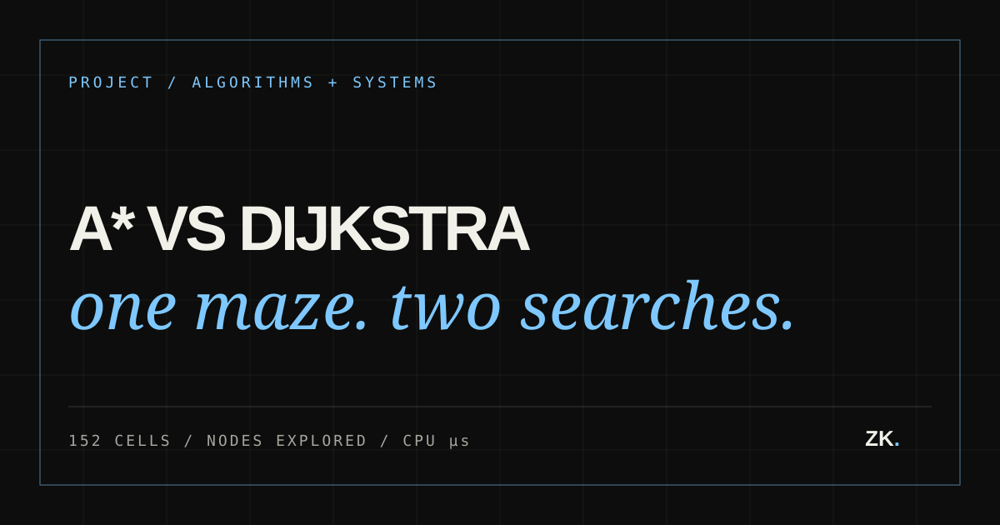

Project / 03
A* vs Dijkstra Maze Visualizer
Problem / Why I built it
Why I built it
Textbook descriptions show that A* uses a heuristic and Dijkstra does not, but they do not make the resulting search behavior tangible. I wanted to watch both algorithms solve the exact same maze and measure what each one actually did.
- Role
- Author
- Dates
- 2026
- Stack
- C++ · A* · Dijkstra · ncurses · RESP
- Status
- Actively refining
- Verified
- 19×8 / 152 cells on one grid
- Repository
- View repository ↗
An ncurses C++ visualizer that generates randomized mazes, runs A* and Dijkstra over the same grid, compares their work, and saves layouts through the separate Redis-compatible server.

Architecture / Request path
How the pieces connect.
- 01Recursive backtracker
- 02Cell-bitmask grid
- 03A* + Dijkstra
- 04Metrics
- 05TCP / RESP storage
02 / Design
System shape
Randomized depth-first search with backtracking generates the maze. Cells store open directions as bit flags. Both pathfinders share the same search structure: Dijkstra prioritizes distance from the start, while A* adds Manhattan distance to the destination. Parent indices reconstruct both final paths.
03 / Implementation
What the code actually does
- 01
Recursive-backtracking maze generation over a compact cell-bitmask representation
- 02
A* and Dijkstra running against the same grid and endpoints
- 03
Path reconstruction plus explored-node, path-length, and timing metrics
- 04
ncurses rendering and keyboard input for macOS and Linux terminals
- 05
A POSIX TCP client that serializes mazes and uses RESP SET/GET with the Mini Redis server
04 / Decisions
Engineering choices
Use one grid
Both algorithms operate on the same maze and endpoints, removing different inputs as a source of misleading comparisons.
Measure more than time
Explored nodes and path length explain algorithm behavior when microsecond timings are dominated by overhead and system noise.
Keep storage external
The visualizer communicates through TCP and RESP instead of importing server code, preserving a real client-server boundary.
Concrete outcomes
- 01
- 19×8 / 152 cells
- 02
- 2 algorithms / 1 grid
- 03
- Explored nodes + CPU µs
Development evidence
Trace the experiment and integration.
Next iteration
Expand malformed-input tests, compare larger maze sizes, and improve benchmark reporting without changing the shared-grid experiment.
What I learned
Theory and measurement answer different questions.
- A* can explore fewer nodes yet lose a tiny timing comparison because its heuristic adds per-node work.
- Algorithmic complexity predicts scaling; profiling describes this implementation, input, and machine.
- Serialization and validation are what let an in-memory maze safely cross a process boundary.